First exit (left)
Indicate left on approach, then left again as you exit.
Calm · visual · trip-ready
A reading-friendly guide for your first week on North Island roads. Short chapters, real NZ photos, clear diagrams, and curated videos.
Chapter 1
Sit on the right, keep left, think in km/h, and leave extra time on winding roads.
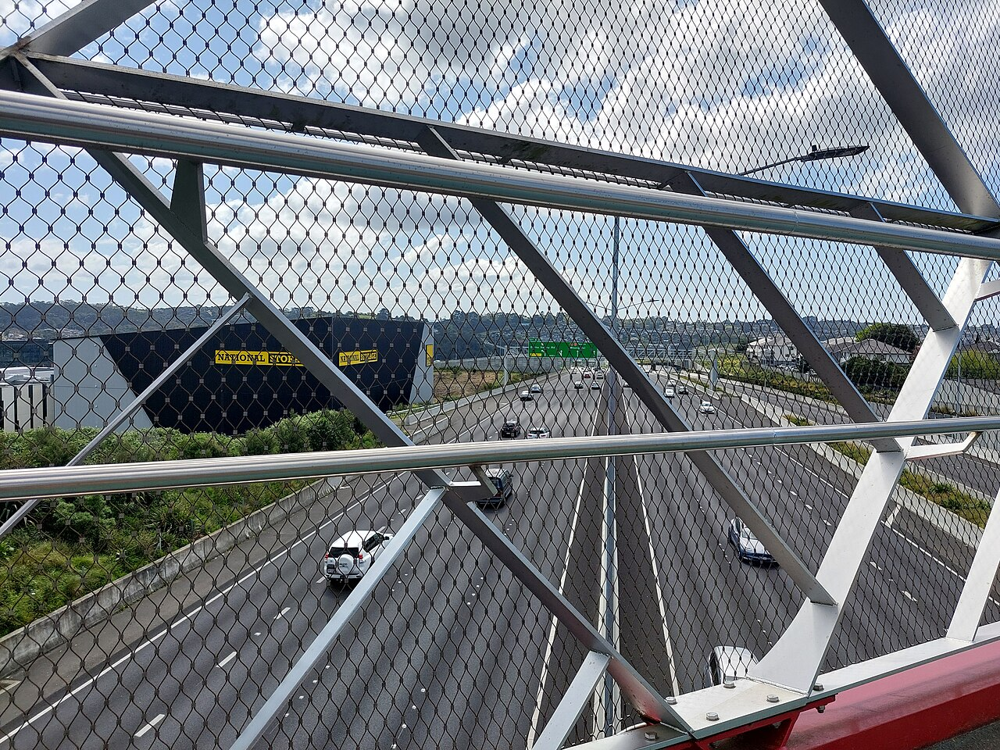
Drive on the left. Keep left except when overtaking. A red light means stop — there is no free turn on red in New Zealand.
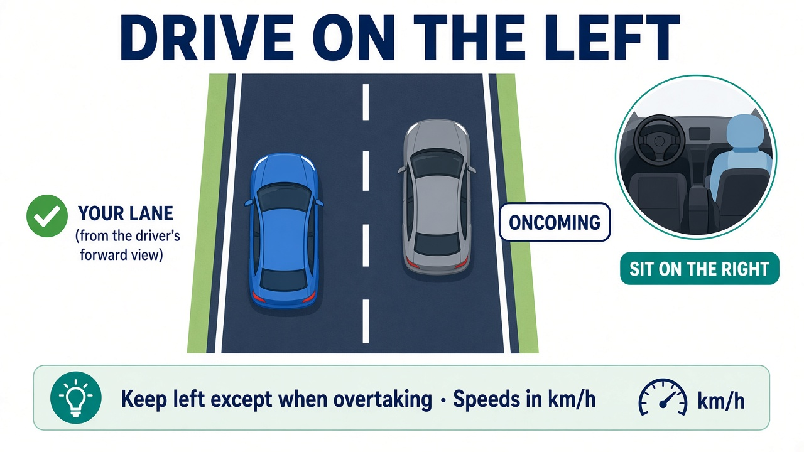
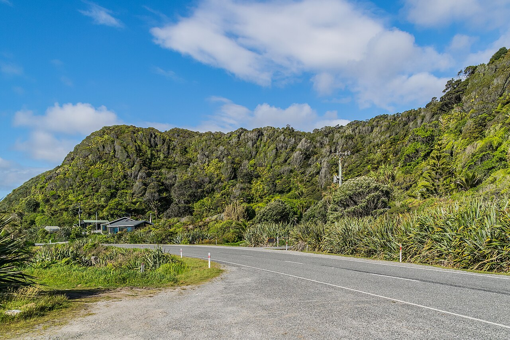
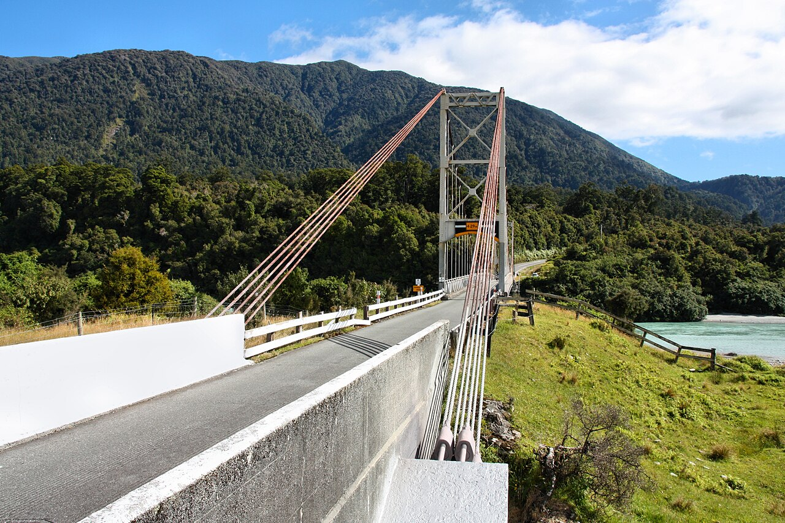
Chapter 2
Give way to traffic from your right, travel clockwise, and always signal left to exit.
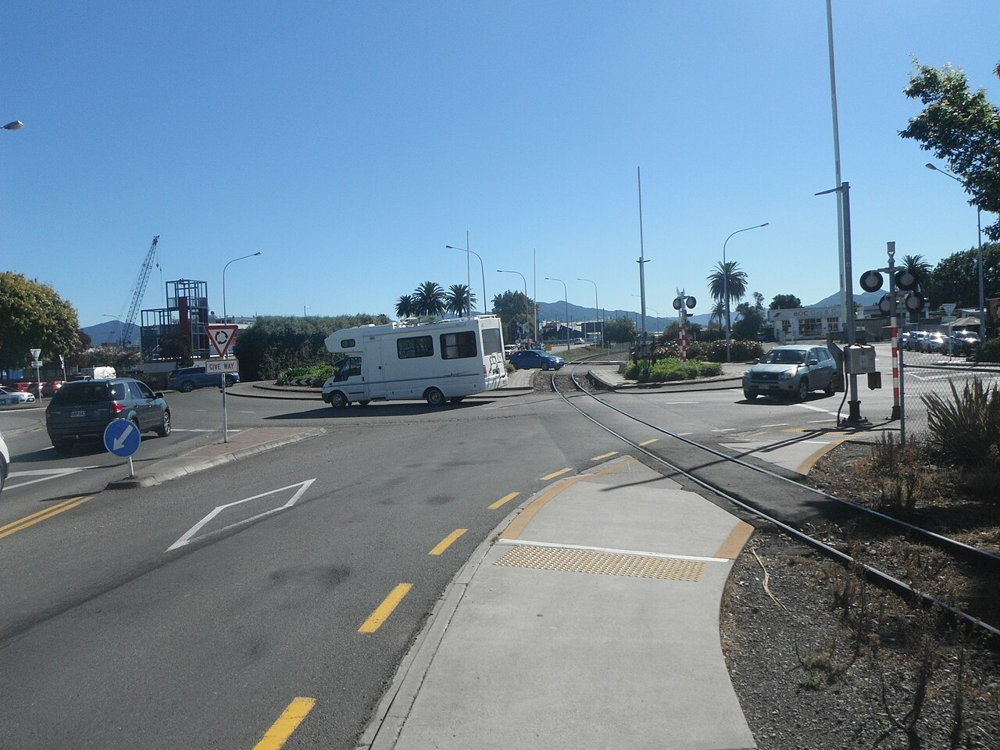
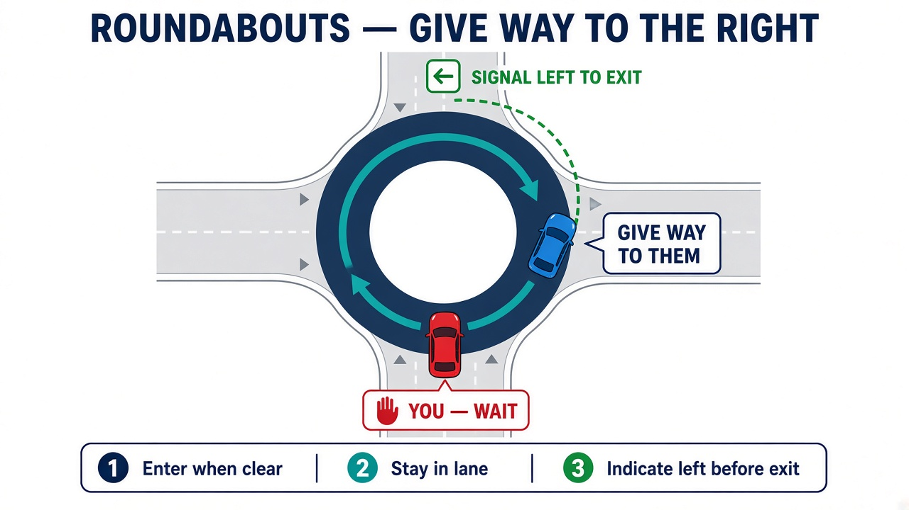
Indicate left on approach, then left again as you exit.
No signal on approach. Indicate left after you pass the exit before yours.
Indicate right on approach, then left to leave.
Official reading: Waka Kotahi roundabouts · PDF guide
Chapter 3
Uncontrolled intersections and T-junctions are where visitors get caught out.
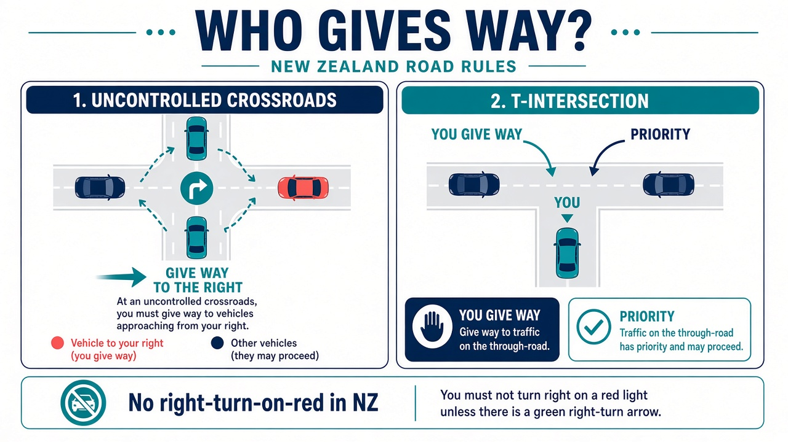
Give way to traffic coming from your right.
If your road ends, you give way to the through road.
A red light means stop. Wait for green (or a green arrow).
Official reading: The give way rules
Chapter 4
Learn the shapes and colours you will see every day — then trust the sign, not old habits from home.
Always follow the NZ sign in front of you over habits from other countries. Shapes and colours can mean different things elsewhere.
Inverted triangle — slow and yield. Stop only if needed.
Red octagon — full stop, then go when clear.
Number in a red circle = km/h. Open road is often 100.
Lower limit near schools — often 40 when children are about.
Solid yellow kerb line — do not stop, even briefly.
Broken yellow — brief drop-off only if you stay with the car. Read the pole sign.
Yellow diamond warning — slow down and prepare to give way.
Check who has priority before you enter — look for the arrow sign.
Blue circle with white arrow — stay in the left lane or side.
Temporary yellow signs — slow for workers and changed lanes.
Orange or yellow board with a lower limit — obey until the end sign.
Green = state highway directions. Blue = local or motorway info.
Kerb lines set the rule; the sign on the pole adds time limits, paid zones, and exceptions. Read both. See Parking for P60, clearway, bus stop, mobility, loading, and pay-and-display signs.
Official reading: Main types of signs — Waka Kotahi · Visiting NZ
Chapter 5
Yellow lines, pole signs, time limits, and pay apps — read the whole story before you walk away.
Solid yellow = no stopping (not even briefly). Broken yellow = no parking (brief passenger drop-off only if you stay with the car).
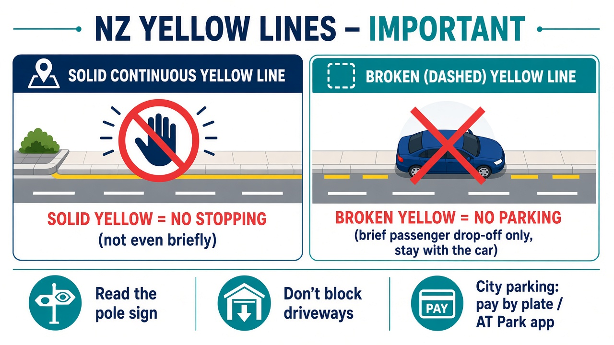
Pole signs sit above the yellow line rules. Read the whole panel — time of day, arrows, and “P” numbers all matter.
Blue “P” with a number = parking allowed for that many minutes. Leave before time runs out.
Hours under the P sign say when the limit applies. Outside those hours the rule may change — check carefully.
No stopping during the times shown — even to drop someone off. Tow trucks often patrol these.
Do not park or wait in a marked bus stop. Leave the bay clear for buses and passengers.
Reserved for vehicles displaying a valid mobility permit. Fines are steep if you use one without it.
For active loading or unloading only — usually a short time. Do not leave the vehicle to shop.
Buy a ticket or start an app session, then display / register your plate. Keep the zone or bay number.
Red circle with a crossed P — same idea as a solid yellow line. Do not stop in that stretch.
Arrows show which way the rule applies along the kerb. Park only inside the arrowed section.
One pole can stack a blue P, a time plate, an arrow, and a pay instruction. If anything conflicts with your plan, choose another park.
Street and council parking is often cashless. Download the app for the city you are in before you leave the car — setup needs a card and sometimes an account.
Auckland Transport’s official app for on-street and many AT off-street parks. Pay by plate, start/stop a session, get expiry reminders.
AT Park info ↗Used by many councils outside Auckland — including Wellington, Christchurch, Hamilton, Tauranga, Dunedin, Queenstown Lakes, and more. Pay by space, extend remotely when allowed.
PayMyPark ↗Private / Wilson-style buildings often use their own app (e.g. ParkMate). Check the entrance sign — the wrong app will not cover that site.
ParkMate ↗Match the app to the sign on the meter or garage. Auckland street parking → AT Park. Many other North Island towns → PayMyPark. If unsure, pay at the machine by plate number, then install the right app for next time.
More: AT — How to not get a fine · Ways to pay (Auckland) · AT Park
Chapter 6
It’s called petrol here. Most rentals take 91. Match the flap sticker.
Prices vary a lot between stations. Locals use the free Gaspy app for nearby petrol and diesel prices before they fill up.
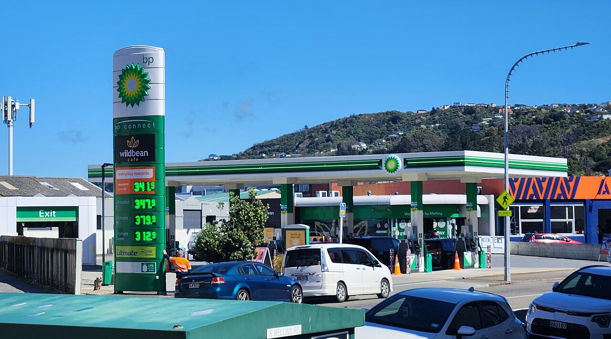
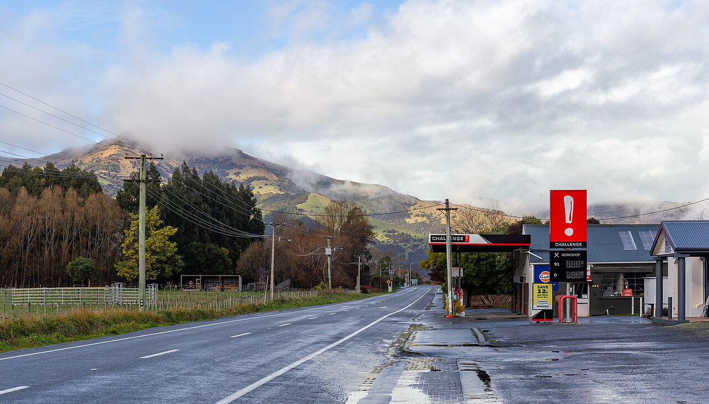
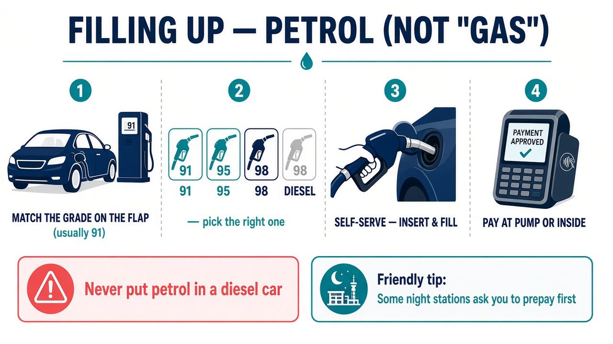
Petrol in a diesel car (or the reverse) can wreck the engine. If unsure, ask staff before you lift a nozzle.
Handy extras
Local apps and habits that make day-one driving smoother.
Install AT Park for Auckland and PayMyPark for many other councils. Photograph the zone or bay number, start a session in the app, and set a reminder before time runs out.
Check Gaspy before you fill — prices on the same street can differ by tens of cents per litre.
Use Google Maps or Apple Maps with driving mode. Say destinations out loud so you are not typing while moving. Watch for temporary roadworks signs that apps lag on.
Contactless and pay-by-plate are common. Keep a little cash as backup for older meters or small-town stations that still prefer it overnight.
Some Auckland motorway sections are tolled. Rental companies often register the plate — ask at pickup so you are not billed twice or fined later.
Confirm the app session started, note return time on the pole sign, and never rely on “I’ll only be five minutes” on a solid yellow line.
Playlist
About 20–25 minutes total. Tick them off as you go.
Before you go
Tap to tick. Progress saves on this device.
Photos: Wikimedia Commons (NZ roads, roundabout, bridges, stations). Rules summarised from Waka Kotahi / Auckland Transport public guidance. This app is a study aid — always follow current road signs and the official Road Code.
Knowledge check
This session is separate from the reading guide. One question at a time, with a short explanation after each answer.
Question 1 of 12
Your result
0 / 12
Quick start
Twelve questions on left-side driving, roundabouts, signs, parking, and petrol. Takes a few minutes — results stay in this browser only.